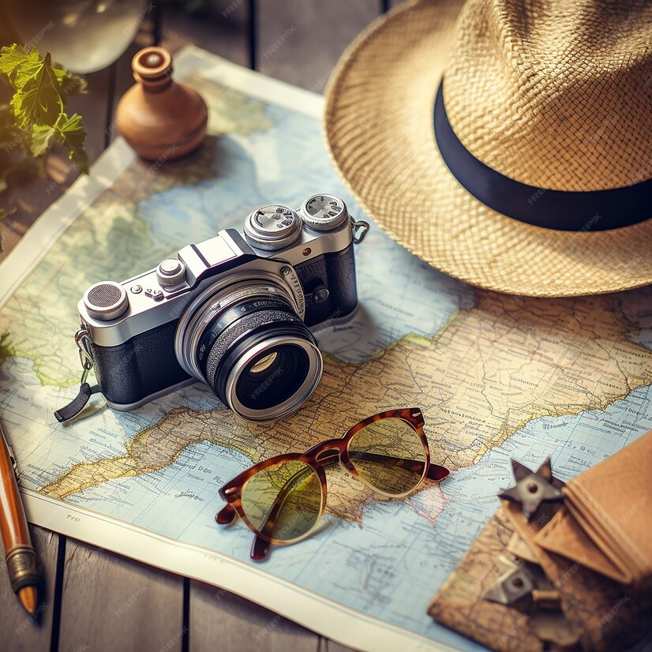
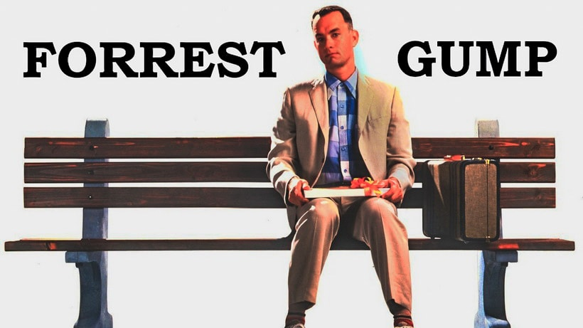
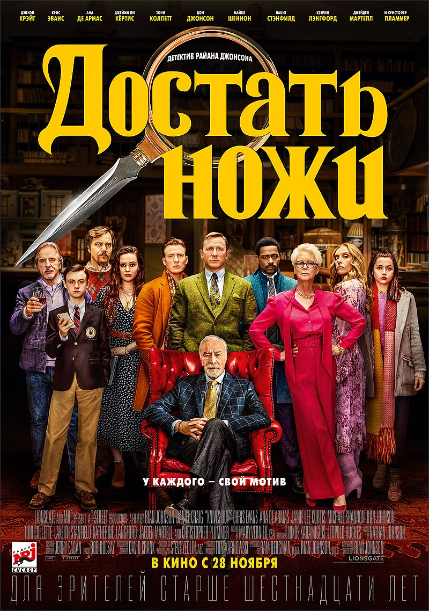

Мои посты
Мои хобби и увлечения
Одно из моих увлечений — это путешествия. Я люблю путешествовать, изучать новые культуры, знакомиться с новыми людьми и открывать для себя новые горизонты. Каждое новое место, которое я посещаю, оставляет в моей душе незабываемые впечатления и вдохновляет
на новые приключения.

Мои увлечения помогают мне находить равновесие и гармонию в жизни, а также расширять свой кругозор и развиваться как личность. Я считаю, что хобби — это необходимость для каждого человека, чтобы не только работать и зарабатывать деньги,
но и наслаждаться жизнью и развиваться в разных направлениях.
Почему я заинтересовалась web-разработкой
Веб-разработка - это одна из самых популярных областей программирования в наши дни. Многие люди, как я, выбирают эту область из-за ее важности и практической применимости. Я хотела бы поделиться, почему выбрала именно эту область
читать далее>>>.
Любимые фильмы
Почему же я люблю смотреть фильмы?
Кино показывает как реальную жизнь, так и вымысел. С помощью фильмов мы можем узнать о событиях, которые происходили очень давно. Кино способно охватывать почти все сферы общественного сознания. Оно заставляет человека осмысливать жизнь
как нечто большее, чем то, как он воспринимал ее до этого.
Форрест Гамп
Форрест Гамп - пожалуй, один из самых известных и любимых многими (не только мною) фильмов. Подозреваю, он - один из лидеров ответа
на вопрос "Какой ваш любимый фильм" и уж точно входит вовсе десятки фильмов, что нужно посмотреть в жизни. Многие фразы из этого кино стали крылатыми - такие, как "Беги, Форрест, беги" или "Жизнь, как коробка шоколадных конфет",
а Форрест Гамп - именем нарицательным.

Достать ножи
Нет ничего лучше, чем посмотреть или почитать детектив в стиле Агаты Кристи. Мне очень нравятся такие вот запутанные истории, где фактически каждый герой может оказаться под подозрением. Именно поэтому мне захотелось посмотреть
фильм «Достать ножи», который оказался весьма качественным. Не сомневаюсь, что ценители хороших детективов его оценят по достоинству.
